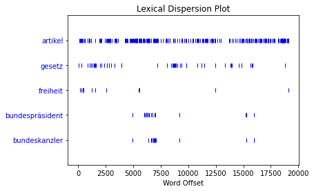
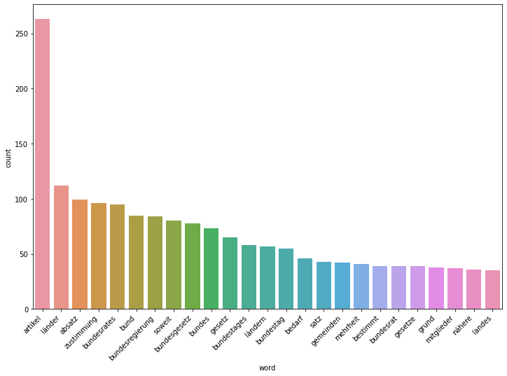

Contents
NLTK und Worthäufigkeiten visualisieren¶
collections¶
from collections import Counter
freq = Counter(grundgesetz_words)
---------------------------------------------------------------------------
NameError Traceback (most recent call last)
~\AppData\Local\Temp/ipykernel_18540/2138696804.py in <module>
1 from collections import Counter
2
----> 3 freq = Counter(grundgesetz_words)
NameError: name 'grundgesetz_words' is not defined
type(freq)
collections.Counter
freq.most_common(25)
[('artikel', 263),
('1', 219),
('2', 201),
('3', 131),
('länder', 112),
('absatz', 98),
('zustimmung', 96),
('bundesrates', 95),
('bund', 85),
('bundesregierung', 84),
('soweit', 80),
('bundesgesetz', 78),
('bundes', 73),
('gesetz', 65),
('4', 65),
('bundestages', 58),
('ländern', 57),
('bundestag', 55),
('bedarf', 46),
('satz', 43),
('gemeinden', 42),
('mehrheit', 41),
('5', 39),
('gesetze', 39),
('bestimmt', 39)]
NLTK¶
import nltk
from nltk.tokenize import word_tokenize
nltk.download('punkt')
with open('grundgesetz.txt', 'r', encoding='utf-8') as infile:
text_raw = infile.read()
text = text_raw.lower()
text = word_tokenize(text)
text = nltk.Text(text)
[nltk_data] Downloading package punkt to /root/nltk_data...
[nltk_data] Unzipping tokenizers/punkt.zip.
concordance¶
text.concordance("bund", width=110)
Displaying 25 of 85 matches:
artikel 10 absatz 2 satz 2 bleibt unberührt . ii der bund und die länder artikel 20 ( 1 ) die bundesrepublik d
vergleichbaren grundrechtsschutz gewährleistet . der bund kann hierzu durch gesetz mit zustimmung des bundesra
n der länder berührt sind oder soweit im übrigen der bund das recht zur gesetzgebung hat , berücksichtigt die
ausgabenerhöhungen oder einnahmeminderungen für den bund führen können , ist die zustimmung der bundesregieru
mitgliedstaat der europäischen union zustehen , vom bund auf einen vom bundesrat benannten vertreter der länd
immung des bundesrates bedarf . artikel 24 ( 1 ) der bund kann durch gesetz hoheitsrechte auf zwischenstaatlic
hbarschaftliche einrichtungen übertragen . ( 2 ) der bund kann sich zur wahrung des friedens einem system gege
regelung zwischenstaatlicher streitigkeiten wird der bund vereinbarungen über eine allgemeine , umfassende , o
de wirtschaftskraftbezogene steuerquelle . ( 3 ) der bund gewährleistet , daß die verfassungsmäßige ordnung de
3. artikel 59 ( 1 ) der bundespräsident vertritt den bund völkerrechtlich . er schließt im namen des bundes di
s bestimmt ist . ( 2 ) er übt im einzelfalle für den bund das begnadigungsrecht aus . ( 3 ) er kann diese befu
ht . ( 2 ) die abgrenzung der zuständigkeit zwischen bund und ländern bemißt sich nach den vorschriften dieses
e befugnis zur gesetzgebung , solange und soweit der bund von seiner gesetzgebungszuständigkeit nicht durch ge
nicht durch gesetz gebrauch gemacht hat . ( 2 ) der bund hat in diesem bereich das gesetzgebungsrecht , wenn
rch landesrecht ersetzt werden kann . artikel 73 der bund hat die ausschließliche gesetzgebung über : 1. die a
er zustimmung des bundesrates . artikel 75 ( 1 ) der bund hat das recht , unter den voraussetzungen des artike
bar geltende regelungen enthalten . ( 3 ) erläßt der bund rahmenvorschriften , so sind die länder verpflichtet
e zu allen behörden entsenden . artikel 86 führt der bund die gesetze durch bundeseigene verwaltung oder durch
undestages errichtet werden . artikel 87 a ( 1 ) der bund stellt streitkräfte zur verteidigung auf . ihre zahl
s eigene angelegenheit übertragen werden . ( 2 ) der bund nimmt die über den bereich der eisenbahnen des bunde
eit der anteile an diesen unternehmen verbleibt beim bund . das nähere wird durch bundesgesetz geregelt . ( 4
nähere wird durch bundesgesetz geregelt . ( 4 ) der bund gewährleistet , daß dem wohl der allgemeinheit , ins
ustimmung des bundesrates bedarf , gewährleistet der bund im bereich des postwesens und der telekommunikation
. ( 3 ) unbeschadet des absatzes 2 satz 2 führt der bund in der rechtsform einer bundesunmittelbaren anstalt
ch maßgabe eines bundesgesetzes aus . artikel 88 der bund errichtet eine währungs- und notenbank als bundesban
similar¶
text.similar("freiheit")
bestimmungen gesetzgebung stelle grundsätze zustimmung mitglieder die
von feststellung artikel vor einheit grundrechte würde rechte aus
vorschriften pflege fürsorge teilnahme
dispersion plot¶
text.dispersion_plot(["artikel", "gesetz", "freiheit", 'bundespräsident', 'bundeskanzler'])

import pandas as pd
import seaborn as sns
import matplotlib.pyplot as plt
df = pd.DataFrame(freq.items(), columns=['word', 'count'])
df = df.sort_values(by='count', ascending=False)
df_top_25 = df.head(25)
fig, ax = plt.subplots(figsize=(12,8))
sns.barplot(x='word', y='count', data=df_top_25, ax=ax)
ax.set_xticklabels(labels=df_top_25.loc[:, 'word'], rotation=45, ha='right');
